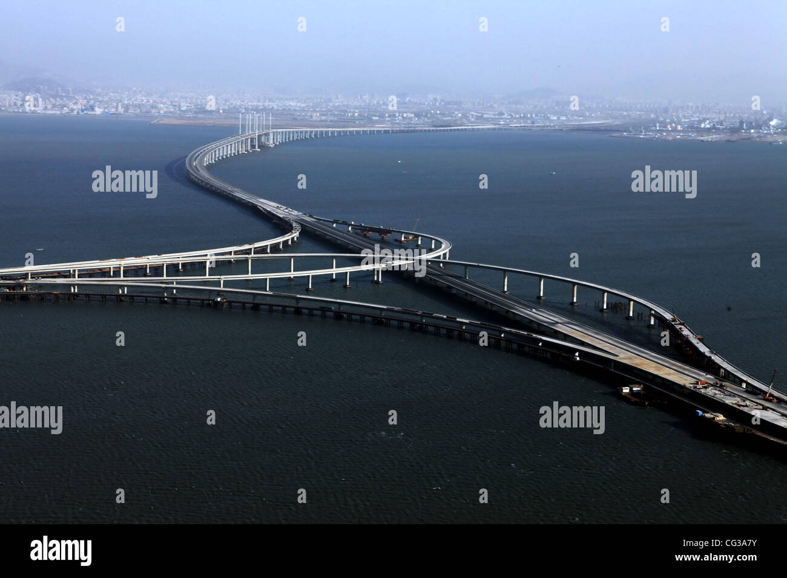
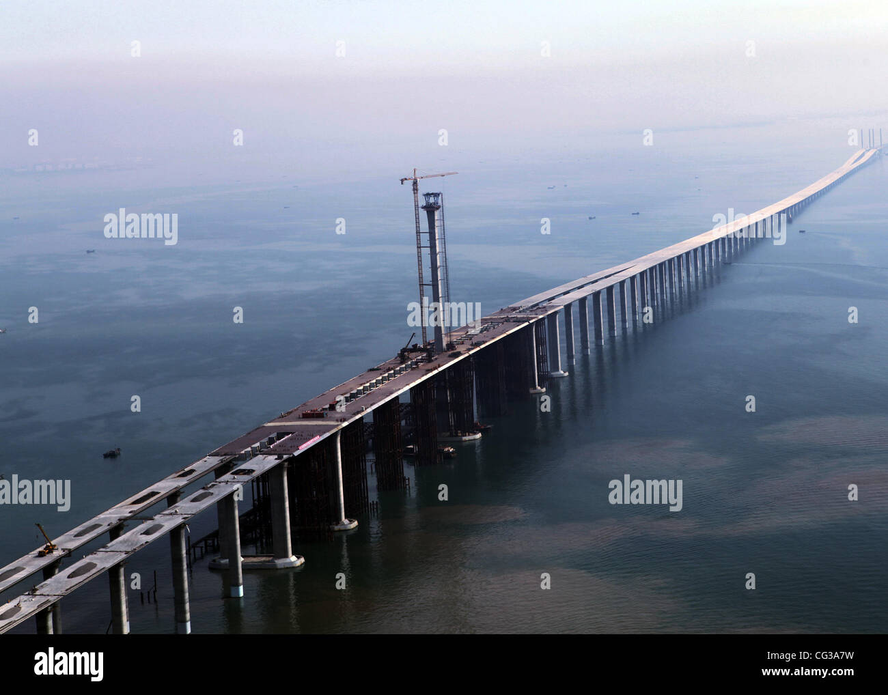

Chcesz zmienić tło?
Aktualny czas:
Moje top 5 i wasze propozycje |
Qingdao Haiwan Bridge  Most Qingdao Haiwan (chiń. upr. 青岛海湾大桥; pinyin Qīngdǎo Hǎiwān Dàqiáo) – most drogowy przez zatokę Jiaozhou w Chinach w prowincji Shandong pomiędzy centrum miasta Qingdao i jego dzielnicą Huangdao. Ma łączną długość 42,5 km. Do 2018 był najdłuższym mostem na świecie wybudowanym nad wodą (→ Most Hong Kong-Zhuhai-Macao)[1]. Na moście znajdują się dwie trzypasmowe jezdnie. Zaprojektowano go tak, aby wytrzymał trzęsienia ziemi, tajfuny i uderzenia statku o wyporności do 300 tys. ton. Budowany był przez cztery lata, równocześnie z obu stron; został połączony w styczniu 2011 roku. Budowę ukończono w połowie 2011 roku[2], a oddano do użytku 30 czerwca 2011 r.[3] |